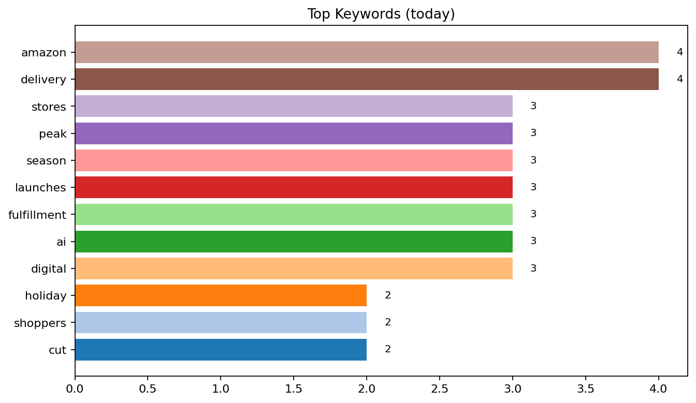
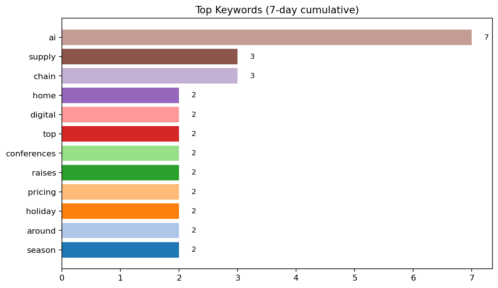
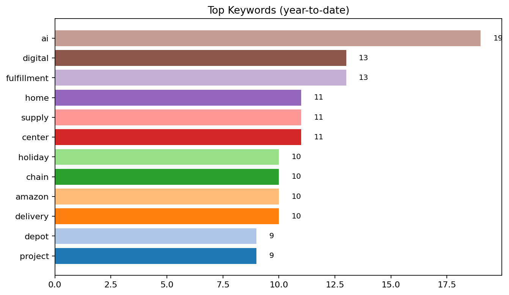

Top Keywords — Today  Top: ai (8), platform (3), shipping (3), raises (2), pricing (2), holiday (2), around (2), season (2), launches (2), chatgpt (2)
Top Keywords — 7-day (cumulative)  Top: ai (8), platform (3), shipping (3), raises (2), pricing (2), holiday (2), around (2), season (2), launches (2), chatgpt (2)
Top Keywords — Month-to-date Top: ai (8), platform (3), shipping (3), raises (2), pricing (2), holiday (2), around (2), season (2), launches (2), chatgpt (2)
Top Keywords — Year-to-date  Top: ai (8), platform (3), shipping (3), raises (2), pricing (2), holiday (2), around (2), season (2), launches (2), chatgpt (2)